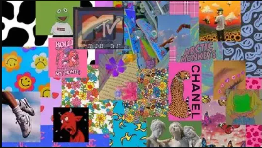
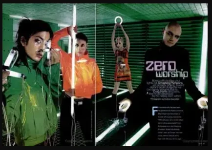
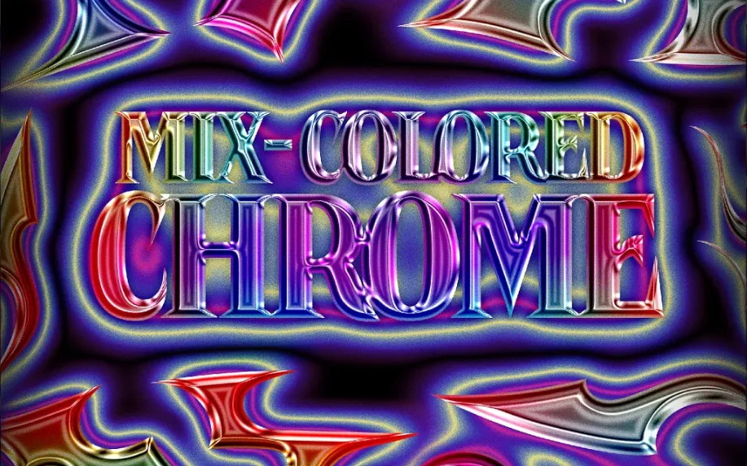
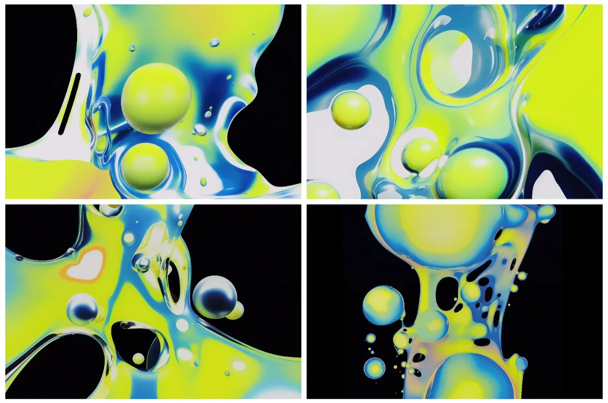
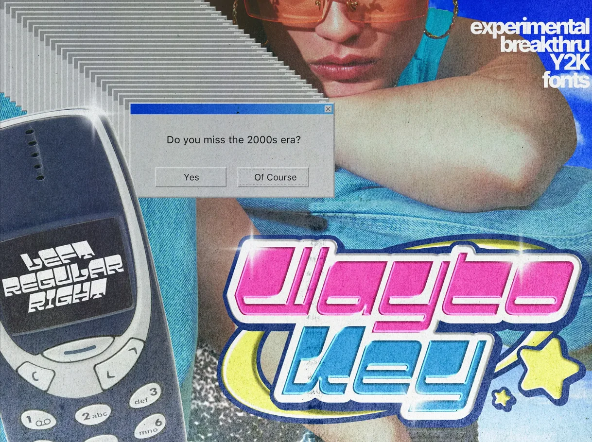
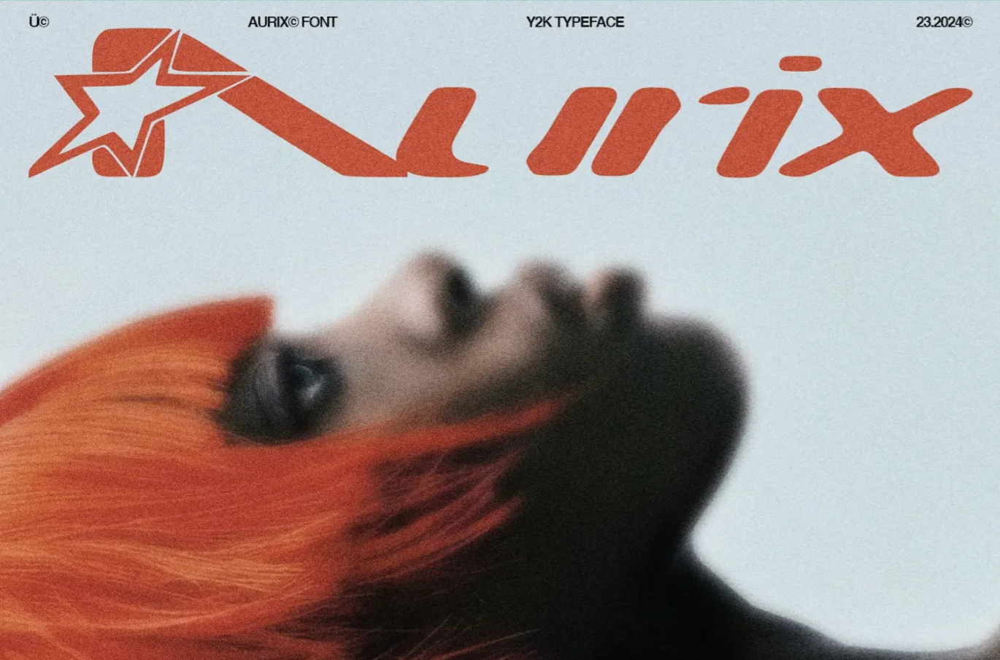
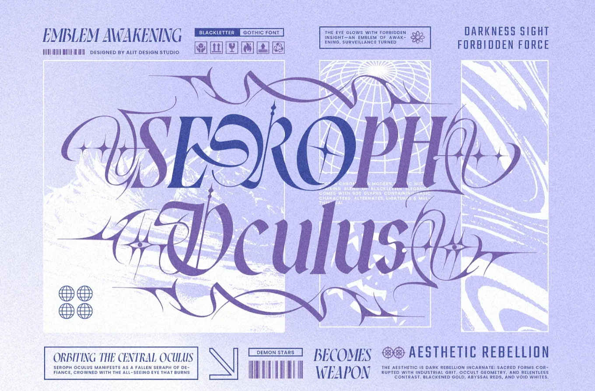

Y2K/ Y2K Moderne
Un style techno‑optimiste, glossy et futuriste, inspiré de l’esthétique numérique de la fin des années 1990 et du début des années 2000.
Né avec l’arrivée du web grand public, des interfaces translucides, des effets chrome, des bulles glossy et des dégradés liquides.
Reflets métalliques, formes arrondies, typographies techno‑soft, compositions lisses et plastifiées, ambiance “futur du passé”, brillante, artificielle et hyper‑digitale.
Fonts
- 1. Oxanium
- 2. Zen Dots
- 3. Jura
- 4. Syncopate
- 5. AudioWide
- 6. Gugi
- 7. Varela Round
- 8. Orbitron
- 9. Michroma
Palettes
#FF66CC
#FEAAFF
#FFB3F7
#00C8FF
#0094FF
#4DA6FF
#B8E2FF
#968AFF
#D9C6FF
#00FFA6
#7CFFE0
#FFE680
#FFF5A5
#F2F2F2
UI Assets
Liquid Background
Background
background:
linear-gradient(135deg, #b8e2ff, #ffd4f2, #d9c6ff);
background-size: 300% 300%;
animation: liquidMove 6s ease infinite;
@keyframes liquidMove {
0% { background-position: 0% 50%; }
50% { background-position: 100% 50%; }
100% { background-position: 0% 50%; }
}
Principal Title
Title
font-family: 'Audiowide', sans-serif;
font-size: clamp(3rem, 10vw, 8rem);
text-transform: uppercase;
letter-spacing: 0.08em;
background:
linear-gradient(90deg, #ffffff,
#e8e8e8, #cfcfcf, #ffffff);
-webkit-background-clip: text;
background-clip: text;
color: transparent;
text-shadow:
0 0 12px rgba(0, 200, 255, 0.3),
0 0 24px rgba(184, 226, 255, 0.4);
Neon Button
Hover me
padding: 1.4vh 3vh;
border-radius: 40px;
font-family: 'Gugi', sans-serif;
font-size: 2.2vh;
color: #ffffff;
background: linear-gradient(180deg, #ffffff 0%,
#ffd4f2 40%, #ff66cc 100%);
border: 2px solid #ffffff;
box-shadow:
inset 0 0 12px #ffffff,
0 0 20px rgba(255, 153, 230, 0.6);
transition: 0.2s ease;
:hover {
transform: translateY(-3px);
box-shadow:
inset 0 0 20px #ffffff,
0 0 30px rgba(255, 153, 230, 0.8);
}
Transparent
Background
border-radius: 20px;
background: rgba(255, 255, 255, 0.35);
-webkit-backdrop-filter: blur(12px);
backdrop-filter: blur(12px);
border: 1px solid rgba(255, 255, 255, 0.6);
box-shadow:
inset 0 0 12px rgba(255,255,255,0.6),
0 0 20px rgba(184,226,255,0.4);
Bubble
width: 180px;
height: 140px;
background:
radial-gradient(circle at 30% 30%, #ffffff, #ffd4f2, #ff99e6);
border-radius: 60% 40% 70% 30% / 40% 60% 30% 70%;
box-shadow:
inset 0 0 12px #ffffff, 0 0 20px rgba(255, 153, 230, 0.6);
Pastel Pattern
padding: 6vh;
border-radius: 20px;
background: linear-gradient(135deg,
#b8e2ff,
#ffd4f2,
#d9c6ff,
#ffffff
);
background-size: 300% 300%;
animation: y2kLiquid 6s ease infinite;
box-shadow:
inset 0 0 12px rgba(255,255,255,0.6),
0 0 20px rgba(184,226,255,0.4);
@keyframes y2kLiquid {
0% { background-position: 0% 50%; }
50% { background-position: 100% 50%; }
100% { background-position: 0% 50%; }
}
Simple Title
Titre
font-family: 'Zen Dots', sans-serif;
font-size: clamp(2.8rem, 7vw, 8rem);
text-transform: uppercase;
letter-spacing: 0.06em;
background: linear-gradient(
90deg,
#b8e2ff,
#ffd4f2,
#d9c6ff,
#ffffff
);
-webkit-background-clip: text;
background-clip: text;
color: transparent;
text-shadow:
0 0 10px rgba(184, 226, 255, 0.4),
0 0 18px rgba(255, 212, 242, 0.4);
Animation Assets
No User Friendly
Hover me
font-family: 'Michroma', sans-serif;
transition: 0.25s ease;
background:
linear-gradient(90deg, #ffd4f2, #b8e2ff, #7cffe0);
-webkit-background-clip: text;
background-clip: text;
color: transparent;
:hover {
filter: hue-rotate(40deg) brightness(1.2);
transform: translateY(-4px);
}
Neon Pulse
Hover me
color: #fff;
background-color: #B8E2FF;
transition: all 0.6s ease-in-out;
animation: y2kSoftPulse 1.6s ease-in-out infinite;
@keyframes y2kSoftPulse {
0% {
text-shadow: 0 0 6px rgba(184,226,255,0.7);
}
50% {
text-shadow: 0 0 14px rgba(255,212,242,1);
}
100% {
text-shadow: 0 0 6px rgba(184,226,255,0.7);
}
}
:hover {
animation: y2kSoftPulseHover 1.6s ease infinite;
}
@keyframes y2kSoftPulseHover {
0% {
text-shadow: 0 0 6px rgb(0, 149, 255);
}
30% {
text-shadow: 0 0 14px rgb(27, 15, 255);
}
50% {
text-shadow: 0 0 14px rgba(15, 103, 255, 0.9);
}
80% {
text-shadow: 0 0 14px rgba(27, 15, 255, 0.8);
}
100% {
text-shadow: 0 0 6px rgba(126, 201, 255, 1);
}
}
Colored Text
C
o
l
o
r
e
d
transition: 0.3s ease;
background: linear-gradient(90deg, #b8e2ff, #ffd4f2, #d9c6ff);
-webkit-background-clip: text;
background-clip: text;
color: transparent;
:hover span {
filter: hue-rotate(90deg);
transform: translateY(-4px);
}
Tilt
display: inline-block;
transition: 0.2s ease;
:hover {
animation: y2kTilt 0.35s ease;
}
@keyframes y2kTilt {
0% { transform: rotate(0deg) scale(1); }
40% { transform: rotate(2deg) scale(1.04); }
70% { transform: rotate(-2deg) scale(1.02); }
100% { transform: rotate(0deg) scale(1); }
}
Hover pop
Hover me
transition: 0.25s ease;
:hover {
transform: translateY(-6px);
text-shadow:
0 4px 10px rgba(184,226,255,0.6),
0 8px 20px rgba(255,212,242,0.5);
}
Bubble Pop
Hover me
:hover {
animation: y2kBubblePop 0.35s cubic-bezier(.26,1.52,.46,.92);
}
@keyframes y2kBubblePop {
0% { transform: scale(0.6); opacity: 0; }
70% { transform: scale(1.12); opacity: 1; }
100% { transform: scale(1); }
}
Holographic
Texte
position: relative;
overflow: hidden;
::after {
content: "";
position: absolute;
top: 0;
left: -120%;
width: 100%;
height: 100%;
background: linear-gradient(90deg,
transparent,
rgba(184,226,255,0.6),
transparent
);
animation: y2kSweep 1.8s ease-in-out infinite;
}
@keyframes y2kSweep {
0% { left: -120%; }
100% { left: 120%; }
}
Créatif Assets
Windows
Content
position: relative;
padding: 8vh 3vh 3vh 3vh;
background: #E8E8E8;
border: 3px solid #000;
border-radius: 2px;
box-shadow:
4px 4px 0 #000,
0 0 0 3px #0094FF inset;
font-family: 'Michroma', sans-serif;
color: #000;
::before {
content: "Windows";
position: absolute;
top: 5%;
left: 3%;
width: 90%;
height: 20%;
background: #0094FF;
border: 3px solid #000;
display: flex;
align-items: center;
padding-left: 10px;
font-family: 'Michroma', sans-serif;
font-size: 14px;
text-transform: uppercase;
}
::after {
content: "X";
position: absolute;
top: 7.7%;
right: 2%;
width: 30px;
height: 15%;
background: #FFF5A5;
border: 3px solid #000;
display: flex;
align-items: center;
justify-content: center;
font-size: 16px;
cursor: default;
}
Inspirations
-

-

-

-

-

-

-
